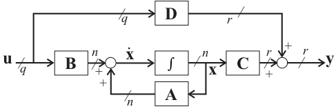

Figure 7.1: A Simple Circuit
Classical control system theory is based on the Transfer Function (TF) model. This applies only to those dynamic systems which can be described by linear time-invariant (LTI) differential equations. TF models are usually applied to Single Input Single Output (SISO) systems. Since the TF is expressed in terms of the Laplace Transform variable, $s$, analysis and design is mostly carried out in the $s$-domain or the frequency domain ($s=j\omega$).
Modern control systems theory is based on a time domain description of a system in terms of a set of first order coupled differential equations in the so-called state variables of the system.
State space models can do anything that classical TF models can do.
In addition state space models have allowed control theory to be extended in various directions:
Handling Multiple Input Multiple Output (MIMO) systems.
Extension to linear time-varying systems.
Clarification of issues of controllability and observability.
Development of powerful compensation methods via state feedback and observers.
Development of optimal control theory.
In this module we will restrict ourselves to the study of mostly to SISO LTI systems, but is important to note the possibility of its extension to more challenging areas.
The state-space model is a form of system representation that is used in several engineering disciplines. It is particularly used in control and in signal processing.
The state-space model is a form of differential equation representation and it is principally used when an analysis of the system behaviour is required in terms of time responses. That stated, it is relatively easy to convert a state-space model into a transfer function, to allow the frequency response analysis of a system. It is however not necessary to do this conversion if the time-response behaviour is all that is required.
The state space model is easily extended to cope with models with more than one input and more than one output. It also has more favourable numerical properties that make it more attractive as a representation for high order systems1 than the polynomial representation provided by the transfer function. State-space models are easily simulated by the straightforward application of numerical integration.
Figure 7.1 shows a simple electrical circuit. We shall develop this circuit into a block diagram and from the block-diagram we shall develop the state-space model. Later we will generalise this result.
If we write down the equations for the elements we get:
$$\begin{eqnarray} \frac{dv_{31}}{dt} &=& \frac{1}{C}\ i_2 \label{eq:l13e1}\\ \frac{di_{i}}{dt} &=& \frac{1}{L}\ v_{32} \label{eq:l13e2}\\ v_{21} &=& R\ i_1 \label{eq:l13e3}\end{eqnarray}$$The "compatability" and "continuity" equations are
$$\begin{eqnarray} u &=& i_1 + i_2 \label{eq:l13e4}\\ v_{31} &=& v_{32} + v_{21} \label{eq:l13e5}\end{eqnarray}$$Since the system "source" is $u$, we can construct the block diagram systematically by tracing the equations through from the source.
We also introduce the additional constraint that we would like the derivative terms $dv_{31}/dt$ and $di_1/dt$ to appear as inputs to integrator blocks whose outputs are therefore
Integrator equations
$$\begin{eqnarray} v_{31} = \int \frac{dv_{31}}{dt} dt \label{eq:l13e6}\\ i_{1} = \int \frac{di_{1}}{dt} dt \label{eq:l13e7}\end{eqnarray}$$We can model these equations in MATLAB/Simulink2 using component block diagram models as shown in Figure 7.2. The other components of equations (1) to (3) appear as gain blocks and (4) and (5) appear as summing junctions.
Simulink model: blocks.slx.
Combining these blocks such that the input is $u$ and the output is the current flowing through the inductance $i_1$3 we obtain the block diagram shown in Figure 7.3.
Simulink model: blockdiag.slx
Having constructed a block diagram that allows us the visualize the structure of the differential equations, we now go on to create the state-space model of the system.
To do this we first identify the "state-variables" which are (in this case) the physical quantities that are changing with time, i.e. the voltage across the capacitor $v_{31}$ and the current through the inductor $i_1$4. The derivatives of these state variables become the left-hand-side of the "state equations".
These equations have apparently already been written down as (1) and (2), but we impose an additional condition that the state equations can only involve the state-variables, their derivatives and the system input. Thus we have to trace the path back through the block diagram from the inputs to the integrator blocks to the (nearest) state variable(s).
Equations (8) and (9) together form a pair of simultaneous equations (they must both be satisfied by the dynamic response of the circuit voltages and currents to the input) and they may therefore be written in vector form5:
The vector $[v_{31}, i_{1}]^T$ is called the "state vector." Its elements are state variables.6
An $n^\mathrm{th}$ order dynamic system can be described by an $n^\mathrm{th}$ order differential equation in one dependent variable, $y(t)$, and an input forcing function, $u(t)$, with time, $t$, as the independent variable.
$$\begin{equation}\frac{d^ny}{dt^n}=f\left(\frac{d^{n-1}y}{dt^{n-1}}, \frac{d^{n-2}y}{dt^{n-2}}, \ldots, \frac{dx_2}{dt}, \frac{dy}{dt}, y, u(t), t \right) \label{eq:l13e12}\end{equation}$$Alternatively, in a state space model extra variables, called states, are introduced to create an equivalent description, but this time involving only 1st order differential equations.
An nth order system gives rise to a state space model consisting of n coupled 1st order differential equations (the state equations (14)--(17)) in terms of $n$ state variables and the input forcing function(s). In addition there are the output equations (13) expressing other variables, or outputs, of interest, also in terms of the states and inputs.
You should note that the formulation used in the differential equation (12) and its equivalent state equations (13)--(18) is completely general and makes no assumptions about the nature of $f$. In fact the only condition is that it represents a lumped parameter system rather than a distributed parameter system. The need to solve such equations by simulation is the basis of the integral models we introduced in Chapter 1.
Derive the state equations for the Spring-Mass-Damper system shown in the Figure 7.4.

You should try this now. We will give the solution in the live class.
Linear systems are the most important ones for control system analysis and design as the best methods and techniques apply to these.
Non-linear systems are often approximated about a suitable operating point by the nearest equivalent linear system allowing linear techniques to be used in the design of a suitable controller.
In the case of linear systems, each state equation expresses the derivative of one of the states as a linear function of the states and inputs. The output equations also express the output variables linearly. As a consequence the natural mathematical notation to use is that of vectors and matrices. Thus state, input and output variables are grouped in column vectors and are multiplied by matrices in the state and output equations.
For linear time varying systems, the matrices have elements which are functions of time, but for time invariant systems all the matrices are constant.
Its derivative is $$\frac{d\mathbf{x}}{dt} = \left[\frac{dx_1}{dt},\ \frac{dx_2}{dt},\ \ldots,\ \frac{dx_n}{dt}\right]^T$$
or more compactly $$\dot{\mathbf{x}}=\left[\dot{x_1},\ \dot{x_2},\ \ldots,\ \dot{x_n}\right]^T.$$
There may be any number of inputs to a system, so we also assume a general vector of $q$ inputs
or more succinctly $$\dot{\mathbf{x}}=\mathbf{A}\mathbf{x}+\mathbf{B}\mathbf{u}$$
Where $\mathbf{A}$ is the $n\times n$ "system matrix" and $\mathbf{B}$ is the $n\times q$ "input matrix".
The state equations allow us to describe the internal behaviour of the system when subjected to stimuli from the inputs. In example 1, we need nothing more if we wish to describe the way that the capacitor voltage $v_{31}$ and inductor current $i_1$ change with time under the influence of the input current $u$. However, if we wish to describe the behaviour of the other variables in the circuit we need to complete the state space model with a set of "output equations."
For illustration purposes we write an "output equation" for every possible signal.
Arranging these equations in vector form we have:
In general, we can describe a system with $r$ inputs in terms of the generic output variables $y_1, y_2,\ldots,\ y_r$ as shown in the next two slides.
Given that some of the inputs to the system may be directly connected to the output, the input vector may also appear in the output general equation.
or more succinctly $$\mathbf{y}=\mathbf{C}\mathbf{x}+\mathbf{D}\mathbf{u}$$
Where $\mathbf{C}$ is the $n\times r$ "output matrix" and $\mathbf{D}$ is the $r\times q$ "feedforward matrix".
This equation relates the states and inputs to the outputs. There are no dynamic terms!
This state-space model always be developed from a system with physically realizable states and physical realistic sources. Such a system is called "proper". If $\mathbf{D}$ is null (matrix of zeros) the system is called "strictly proper".
A block diagram representation of the state space model is shown in Figure 7.5. The block diagram of the circuit, rearranged to match the general model is shown in Figure 7.6.

Simulink model: statemodel.slx
Important note, for this to work you must assign numerical values to the
the parameters Cap, R and L.
clear all
cd matlab
format compact
Cap = 1e-6; % 1 uF
L = 3e-3; % 2 mH
R = 200e3; % 200 kOhm
A = [0 -1/Cap; 1/L -R/L];
B = [1/Cap; 0];
C = [1 0; 0 1; 1 -R; 0 R; 0 -1];
D = [0; 0; 0; 0; 1];
circ_ss = ss(A, B, C, D,...
'statename',{'v31' 'i1'}, 'inputname','u',...
'outputname', {'v31' 'i1' 'v32' 'v21' 'i2'});
circ_ss
Once you have the state-space model, all the analysis techniques seen so far are open to you.
Construct the state-space model chosen by the class from the Control Systems Tutorials in MATLAB and Simulink collection.
Systems with large numbers of derivative terms
Note that in triangular blocks are used for gains and that the transfer function block $1/s$ represents the integral operator $\int$. The small elliptical blocks represent input and output ports.
We could have used any signal as an output as we shall see later.
A state variable that can be related to a physical quantity is called a "physical state variable."
You should expand this matrix equation (8) out to verify that it is equivalent to (6) and (7).
The matrix operator $[]^T$ is the "transpose" operator. In this case it converts the row vector shown into the column vector actually used in the state equations. When applied to a matrix, the rows of the matrix become the columns of the transposed matrix. We shall use the transpose operator in the discussion of state equations to avoid messy attempts to write column vectors in the body of a sentence!
For this system, summing the forces in the direction $x$ we have
$$F = m\frac{d^2x}{dt^2} + b\frac{dx}{dt} + kx$$If we chose the position $x$ of the mass $m$ and its velocity $dx/dt$ to be the states, and let the force $F$ be the system input, then $x_1 = x$, $x_2 = dx/dt$ and $u=F$ and the state equations are:
$$\begin{eqnarray*} \frac{dx_1}{dt} & = & x_2 \\ \frac{dx_2}{dt} & = & -\frac{k}{m} x_1 -\frac{b}{m} x_2 + \frac{1}{m} u\end{eqnarray*}$$You should construct the Simulink model represented by these equations and compare the results with those shown in Chapter 1.